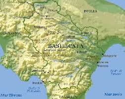
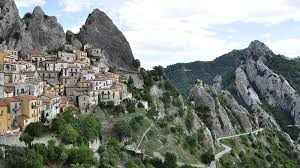

Visto il periodo favorevole (inverno...), il clima ideale (un freddo boia...), le precipitazioni scarse (mezza Italia sotto la neve...), le strade percorribili (con la motoslitta...), ce ne andiamo qualche giorno a fare i turisti in questa zona:

Una delle mete, se mai ci arriveremo (lo so che fra una settimana è facile...), è il paesello in figura: che paesello è?

(Lo dico al ritorno, con la fotografia aggiornata al periodo).
E gli alambicchi? Dimentichiamoli, per un pochino!
2 commenti